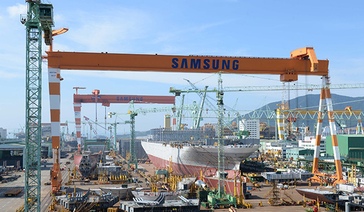
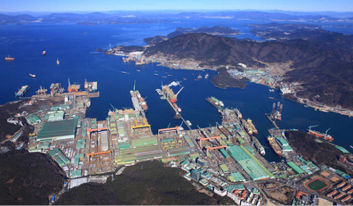
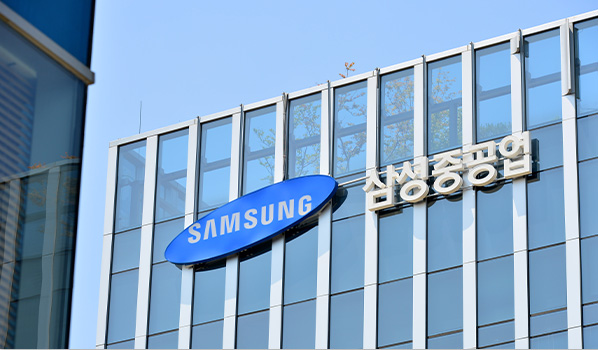

HOME > 회사소개 > 거제조선소 소개
거제조선소 소개
“한국 조선해양산업의 중심지 삼성중공업 거제조선소 방문을 환영합니다.”
-

- 세계 최고의 도크 회전율을 자랑하는 조선소
- 도크회전이란 도크에서 건조하는 선박의 진수 횟수로 회전율이 높을수록 뛰어난 건조공법과 생산효율을 갖추고 있음을 의미합니다. 또한 도크 회전율은 조선소의 매출증대에 직결되는 것으로서 조선소의 기술수준과 생산효율을 가늠하는 가장 확실한 척도입니다.
- 삼성중공업 거제조선소에서 가장 큰 제3도크는 길이 640m, 폭 97.5m, 깊이 12.7m로 세계 최대 부유식 해양설비인 Shell Prelude FLNG를 성공적으로 건조하였고 현재는 23,000TEU급 세계 최대 컨테이너선 등을 건조하며 조선해양업계의 새로운 역사를 써나가고 있습니다.
-

- 세계 3대 국제규격에 이어 세계 최초로
ISO50001 인증까지 취득한 첫 번째 조선소 - 거제조선소는 ISO9001(품질경영), ISO14001(환경경영), OHSAS18001(안전보건경영) 등 세계가 규정한 3대 국제규격을 공인받은 첫 번째 조선소입니다. 최근에는 에너지경영 국제표준인 ISO50001을 세계 최초로 취득해 조선업 국제 인증을 모두 최초로 취득하는 진기록을 달성하기도 했습니다.
- 세계 3대 국제규격에 이어 세계 최초로
-

- 로봇을 활용한 세계 최고의 생산자동화율
- 삼성중공업 거제조선소는 LNG선 화물창을 자동으로 용접하는 스파이더 로봇을 비롯해 파이프내부의 용접상태를 검사하고, 이물질을 청소해주는 파이프내부 자동 검사청소로봇, 선체외벽을 자유자재로 타고 다니면서 작업을 하는 블라스팅 로봇 등 자체 개발한 각종 지능형 로봇들을 활용해 안전은 물론, 완벽한 품질을 확보하고 있습니다.